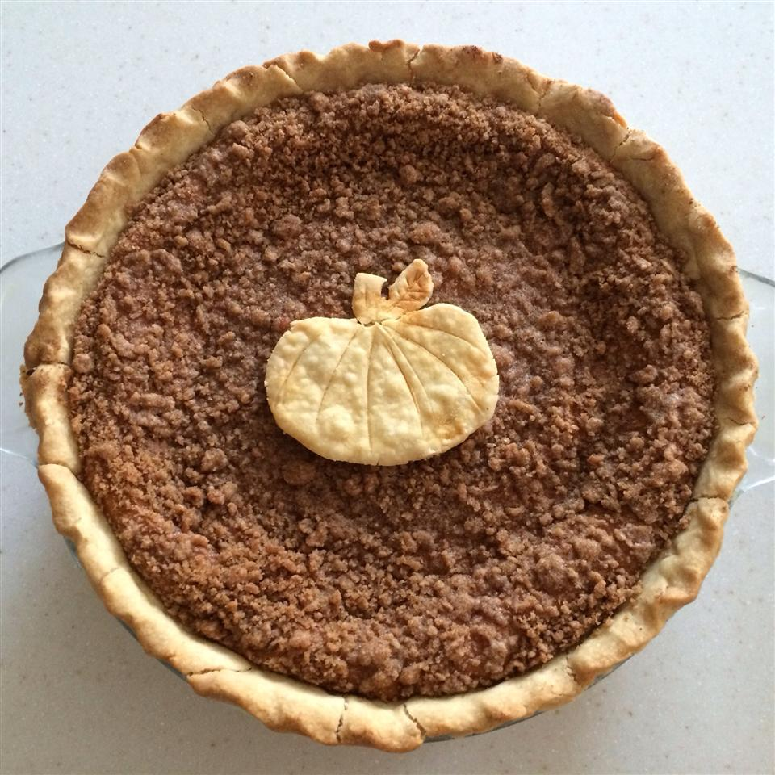

Pumpkin Pie

Description
This is a recipe for pumpkin pie. A walnut streusel topping
adds to the flavor. Serve with whipped topping or ice cream
Ingredients
- 1 (15 ounce) can pumpkin puree
- 1 (14 ounce) can sweetened condensed milk
- 2 egg yolks
- 2 egg whites
- 1 (9 ounce) unbaked pie shell
- 2 tablespoons all-purpose flour
- 2 tablespoons butter
- 1 cup chopped walnuts
Steps
- Preheat the oven to 425 degrees F
- In a large bowl mix together the pumpkin, condensed milk, and egg yolks.
- In a large glass or metal bowl, whip egg whites and gently fold into pumpkin mixture then pour filling into pie shell.
- Bake for 15 minutes in the preheated oven. In a small bowl, combine the flour, butter, and walnuts and mix until crumbly then sprinkle the topping over the pie.
- Reduce the heat to 350 degrees F and bake an additional 40 minutes or until set.